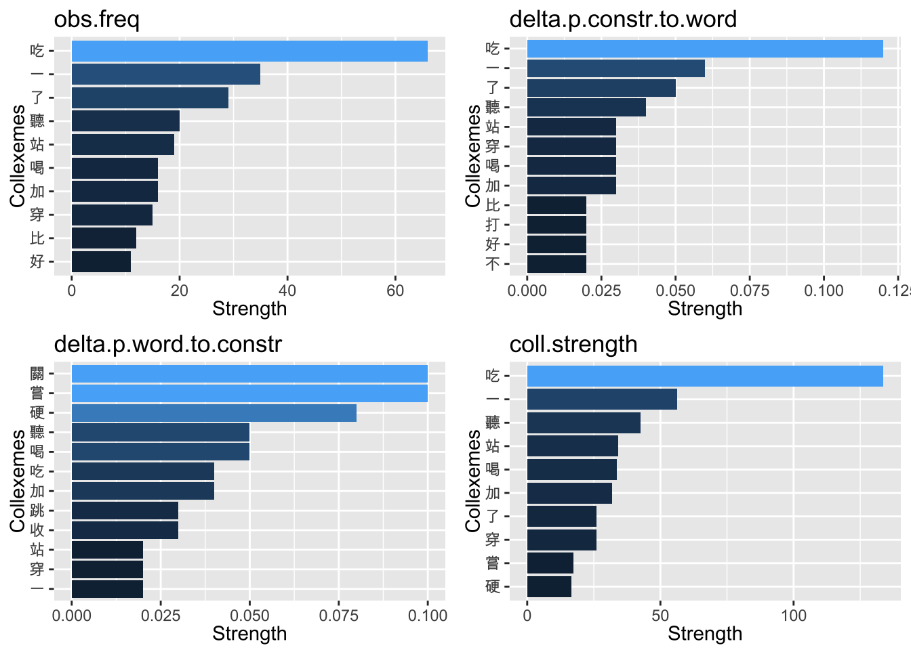

Chapter 13 Vector Space Representation II
13.1 Chinese Text Analytics Flowchart
Figure 13.1: Chinese Text Analytics Flowchart
In Chapter 12, we have demonstrated the potential of a vector representation of documents with the English data. Here, we would like to look at the Chinese data in more detail.
In the corpus data processing flowchart, as repeated below (Figure 13.1), we need to deal with the word segmentation with the Chinese data. This prevents us from creating a dfm directly from a corpus object because the default internal word tokenization in quanteda is not optimized for non-English languages.
In this chapter, we will be using the dataset demo_data/TaiwanPresidentalSpeech.zip. Please make sure that you have downloaded the dataset from demo_data.
13.2 A Quick View
For Chinese data, the major preprocessing steps have been highlighted in Figure 13.1:
- First load the corpus using
readtext()and create corpustibble/data.frameobject (withas_tibble()) - Tokenize the text-based corpus
data.frameusingunnest_tokens()and self-defined word tokenizer fromjiebaR::segment(). This will give you a token-basedtibble/data.frameversion of your corpus. - Tokenize the
textscolumn/vector from the text-based DF usingjiebaR::segment()and convert thelistoutput into atokenobject usingas.tokens(). This will give you atokenversion of your corpus.
A token object is defined in quanteda, with many similar functions as a corpus object. This is the most important trick with the Chinese data.
When you utilize many different libaries in R for your tasks, one thing you need to keep in your mind is that you need to fully understand what kind of objects you are dealing with. That is, you need to keep track of every variable you create in your script in terms of their object type/class. A vector is different from a list; a list is different from a token. Also, some of the object classes are predefined in R (e.g., vector, data.frame) while others are defined in specific libararies (e.g., corpus, token, dfm). As a habit, always check your object class (i.e., class()).
13.3 Loading the Corpus
## [1] "tbl_df" "tbl" "data.frame"NB: readtext() creates a readtext or data.frame object. Following the tidy principle, we convert everything into tibble.
When I load the corpus, I convert the readtext output directly into a tibble. If you need to process the corpus as a corpus object defined in quanteda, you can use corpus() to convert the readtext into corpus object. For now, we don’t need that.
13.4 Semgentation
In order to create a vector representation of the Chinese documents, we need to create the dfm for our corpus. In Chapter 12, we suggest two ways to create the dfm:
- create the
dfmfrom thecorpusobject - create the
dfmfrom thetokensobject
The second method is preferred for Chinese texts because we get to use our own word segmenter and self-defined dictionary for word segmentation.
Therefore, with the text-based DF, now the next steps include:
- Initialize the
jiebaRword segmenter, where a user dictionary is defined (Always use own dictionary to improve the performance of word segmentation) - Subset the text column of
corp_tw - tokenize the texts and convert the output into a quanteda-compatible object, i.e.,
tokens
# initialize segmenter
chi_seg <- worker(bylines = T,
user = "demo_data/dict-ch-user.txt",
symbol = F)
corp_tw_tokens <- corp_tw$text %>% # subset `text` column
segment(jiebar = chi_seg) %>% # tokenize the texts
as.tokens # covert to `tokens`
class(corp_tw_tokens)## [1] "tokens"## [1] "為" "年輕人" "打造" "一個" "更好" "的" "國家" "各位"
## [9] "友邦" "的"
Please note that when we initilize the segmenter chi_seg, we specify the argument work(…, symbol = F because symbols may not be semantically relevant in our later analysis of vector space representation.
But you should be well aware of which tokens have been removed/kept in the preprocessing of your data.
13.5 Corpus Metadata
When we subset the texts from the DF corp_tw for word segmentation, all the metadata connected to each text did not go with the texts. So the corp_tw_tokens did not have any metadata information.
We can retrieve/add metadata information using quanteda::docvars() for corpus and tokens objects.
Now the corp_tw_tokens does not have any metadata:
So here we extract metadata information from the original filenames of each text stored in the corp_tw, and attach this metadata to corp_tw_tokens.
corp_tw_meta <-corp_tw %>%
dplyr::select(-text) %>%
separate(doc_id, into = c("YEAR","TERM","PRESIDENT"),sep = "_") %>%
mutate(PRESIDENT = str_replace(PRESIDENT, ".txt",""))
corp_tw_meta13.6 Document-Feature Matrix
Now that we have a tokens version of our corpus, we can create dfm using the dfm(). Also, we can take care of the feature selection (cf. Chapter 12.8) using functions like dfm_trim(), dfm_select().
corp_tw_dfm <- corp_tw_tokens %>%
dfm(remove = readLines("demo_data/stopwords-ch.txt"),
remove_punct = T,
remove_numbers= T,
remove_symbols = T) %>%
dfm_trim(min_termfreq = 5, termfreq_type = "count",
min_docfreq = 2, max_docfreq = ndoc(corp_tw_tokens),
docfreq_type = "count")
nfeat(corp_tw_dfm)## [1] 714## [1] "dfm"
## attr(,"package")
## [1] "quanteda"## Document-feature matrix of: 5 documents, 10 features (14.0% sparse) and 3 docvars.
## features
## docs 中正 國民大會 憲法 選舉 中華民國 總統 國家 人民 公僕 就職
## text1 5 1 12 1 5 1 18 17 1 2
## text2 4 4 3 1 4 1 8 5 1 1
## text3 5 1 0 1 0 2 3 6 0 1
## text4 7 3 2 1 1 3 10 4 0 0
## text5 5 1 1 0 3 2 2 1 1 013.7 Top Features and Wordcloud
require(wordcloud2)
top_features <- corp_tw_dfm %>% topfeatures(100)
word_freq <- data.frame(word = names(top_features),
freq = top_features)
word_freq %>%
wordcloud2(size= 0.8,minRotation = -pi/2, maxRotation = -pi/2)
13.8 Document Similarity
corp_tw_cosine <- corp_tw_dfm %>%
dfm_weight(scheme = "prop") %>%
textstat_simil(method="cosine")
corp_tw_hist <- (1-corp_tw_cosine) %>%
as.dist %>%
hclust
hist_labels <- str_c(docvars(corp_tw_dfm,"YEAR"), docvars(corp_tw_dfm,"PRESIDENT"), sep="_")
plot(corp_tw_hist, hang = -1, cex = 1.2, label = hist_labels)
13.9 Feature Similarity
# convert `dfm` to `fcm`
corp_tw_fcm <- corp_tw_dfm %>% fcm
# select top 30 features
corp_tw_topfeatures <- names(topfeatures(corp_tw_fcm, 50))
# plot network
fcm_select(x = corp_tw_fcm,
pattern = corp_tw_topfeatures) %>%
textplot_network(min_freq = 0.5) ->g
ggsave("test.png", g)
Exercise 13.1 Create the network of top 30 bigrams for the corpus corp_tw. The critera for bigrams selection are as follows:
- include bigrams whose frequency >= 5 and docfreq >= 2

Exercise 13.2 There is an interesting application. When we analyze the document similarity, we create the graph of a dendrogram using hierarchical cluster analysis. In fact, document relations can also be represented by a network as well, as we do with the features in Section 13.9. How could you make use of the function textplot_network() in quanteda to create a network of the presidents?
Please create a similar president network as shown below.
dfm so that presidents become the features of the matrix.
